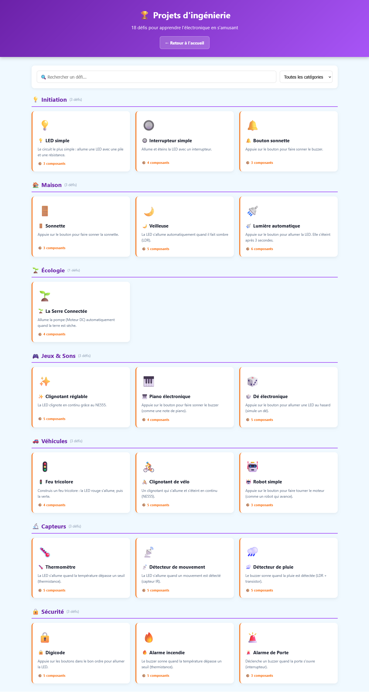
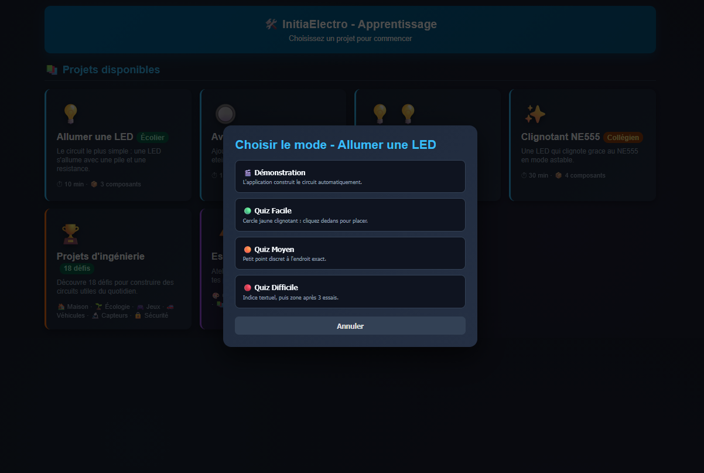
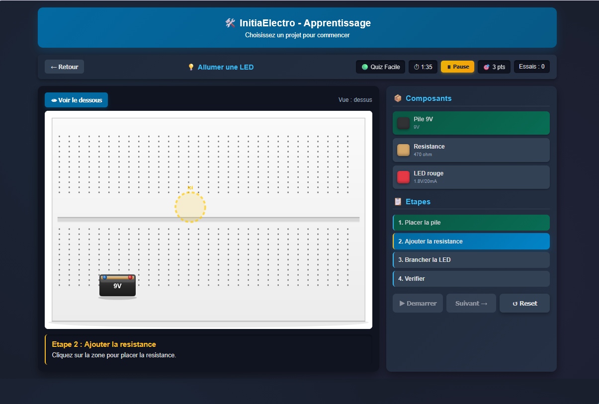
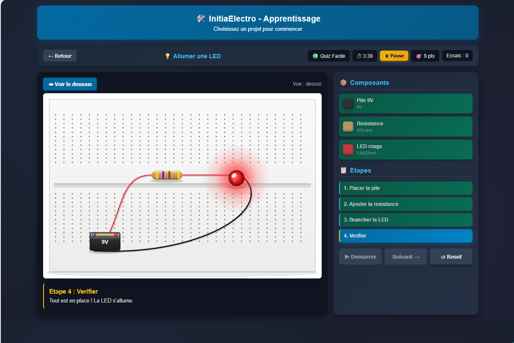
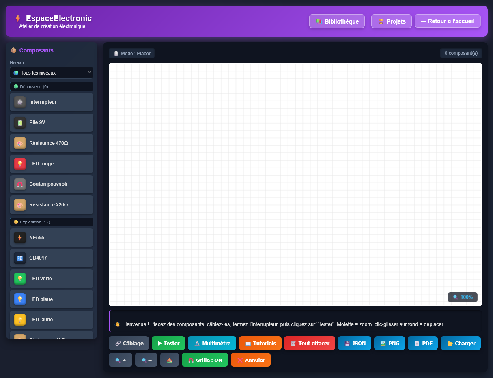
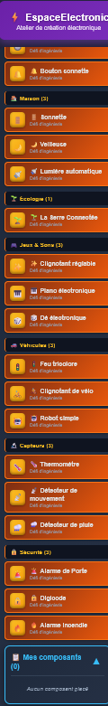
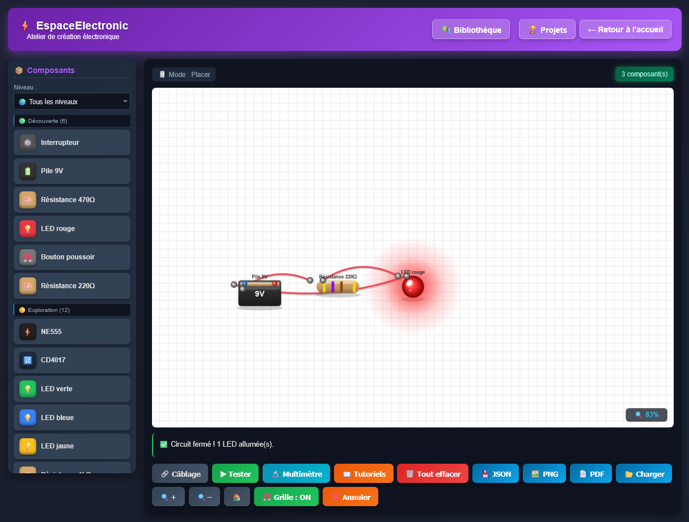

1. 🚀 Comment démarrer l'appli
C'est super simple ! Suis ces étapes :
📋 Étapes à suivre
- Demande à ton professeur l'adresse de l'appli (ou utilise le lien plus haut).
- Ouvre un navigateur (Chrome, Edge, Firefox...).
- Tape l'adresse :
https://abdelziane979-eng.github.io/initiaelectro/
- Appuie sur Entrée.
- 🎉 L'appli s'ouvre : tu vois la page d'accueil avec les projets !
💡
Astuce : Tu peux installer l'appli sur ton ordinateur ou ta tablette pour y accéder plus vite ! Demande à ton prof comment faire.
2. 💡 Ton premier circuit : la LED
Tu vas créer ton tout premier circuit : allumer une LED !
C'est le circuit le plus simple qui existe. Il a besoin de 3 choses :
| Composant |
À quoi ça sert |
| 🔋 Pile 9V |
Donne l'énergie au circuit |
| 🎨 Résistance 470Ω |
Protège la LED (elle limite le courant) |
| 💡 LED rouge |
S'allume quand le courant passe |
📋 Étapes pour construire ton circuit
- Sur la page d'accueil, clique sur "Allumer une LED".
- Choisis le mode "🟢 Quiz Facile".
- Tape ton prénom (pour ton bilan).
- Clique sur "▶ Démarrer".
- Un cercle jaune clignotant apparaît. Clique dedans pour placer la pile.
- Un autre cercle apparaît : clique pour placer la résistance.
- Pareil pour la LED.
- 🎉 Bravo ! La LED s'allume !
ℹ️
Le savais-tu ? La résistance est indispensable ! Sans elle, la LED grillerait instantanément. C'est comme un robinet qui règle le débit d'eau.
3. 🎮 Les 4 modes de jeu
Pour chaque projet, tu peux choisir parmi 4 modes :
| Mode |
Description |
Difficulté |
| 🎬 Démonstration |
L'appli construit le circuit toute seule |
⭐ |
| 🟢 Quiz Facile |
Cercle jaune clignotant pour t'aider |
⭐⭐ |
| 🟠 Quiz Moyen |
Petit point discret |
⭐⭐⭐ |
| 🔴 Quiz Difficile |
Aucune indication, à toi de deviner ! |
⭐⭐⭐⭐ |
💡
Conseil : Commence toujours par le mode Facile ou Moyen. Le mode Difficile est pour les experts !
4. 🎯 Comment gagner des points
Tu gagnes des points selon combien d'essais tu utilises pour placer chaque composant :
| Essais |
Points gagnés |
Étoiles |
| 1er essai (du premier coup !) |
3 points |
⭐⭐⭐ |
| 2ème essai |
2 points |
⭐⭐ |
| 3ème essai |
1 point |
⭐ |
| Plus de 3 essais |
0 point |
— |
🏆
Score parfait : Si tu réussis tous les composants du premier coup, tu obtiens 100% et un gros trophée 🏆 !
🎯 Défi personnel
Essaie d'obtenir 9 points sur 9 au projet "Allumer une LED" !
Astuce : regarde bien où le cercle clignote avant de cliquer 😉
5. 🔘 Avec un interrupteur
Ici, tu vas apprendre à allumer et éteindre une LED avec un interrupteur.
C'est comme un interrupteur de lampe chez toi !
🎯 Comment ça marche ?
- Place tous les composants (pile, interrupteur, résistance, LED).
- Clique sur "▶ Tester".
- Puis clique sur l'interrupteur dans le circuit !
- Quand il passe au vert (ON), la LED s'allume 💡
- Quand il passe au rouge (OFF), la LED s'éteint ⚫
6. 💡💡 Deux LED en série
Maintenant, on va allumer 2 LED en même temps : une rouge 🔴 et une verte 🟢.
🎯 Ce qui change
- Il y a une LED de plus.
- La résistance est un peu plus petite (220Ω au lieu de 470Ω).
- Les deux LED s'allument ensemble !
💡
Le savais-tu ? En mettant les LED en série, le courant traverse l'une puis l'autre. C'est pour ça qu'elles s'allument en même temps.
7. ✨ Le clignotant NE555
Projet le plus impressionnant : une LED qui clignote toute seule ! 🎇
🎯 Le composant magique : le NE555
Le NE555 est une petite puce électronique (8 pattes) qui peut faire clignoter une LED. On dit qu'il est en mode "astable".
- Il envoie du courant, puis l'arrête, puis le renvoie...
- La LED clignote donc en continu.
- On peut régler la vitesse avec la résistance et le condensateur.
🚀 Projet expert
Ce projet utilise 4 composants différents. Prends ton temps et observe bien les zones clignotantes !
8. 📊 Ton bilan de fin
À la fin de chaque projet, tu vois un bilan avec :
| Information |
Signification |
| 👤 Ton prénom |
Pour personnaliser le bilan |
| 🎯 Ton score |
Ex: 7/9 points |
| ⏱ Ton temps |
Combien de temps tu as mis |
| 📋 Le détail |
Étape par étape (essais, temps) |
🏆 Les messages selon ton score
- 🏆 PARFAIT ! : 100% de réussite
- 🥈 TRÈS BIEN ! : 75% ou plus
- 🥉 BIEN JOUÉ ! : 50% ou plus
- 💪 CONTINUE ! : moins de 50%
💡
Astuce : Tu peux télécharger ton bilan en fichier .txt en cliquant sur "📄 Exporter .txt". Pratique pour le montrer à ton prof !
10. 🧱 Les 11 composants
Voici tous les composants que tu peux utiliser dans le bac à sable :
| Emoji |
Nom |
Utilité |
| 🔋 | Pile 9V | Fournit l'énergie |
| 🎨 | Résistance | Limite le courant |
| 💡 | LED | S'allume (rouge/vert/bleu) |
| 🔘 | Interrupteur | Allume/éteint |
| ⚡ | NE555 | Minuteur/clignotant |
| 🔢 | CD4017 | Compteur (10 sorties) |
| 🔌 | Condensateur | Stocke l'énergie |
| 🎛️ | Transistor 2N2222 | Amplifie/commute |
| 📏 | LDR | Résistance photo |
| 🧲 | Bouton poussoir | Bouton momentané |
| 🔊 | Buzzer | Fait du bruit |
💡
Astuce : Clique sur un composant dans la palette (à gauche), puis clique dans la zone blanche pour le placer.
11. 🔬 Le multimètre
Le multimètre, c'est l'outil que les vrais électroniciens utilisent pour mesurer !
🎯 3 modes disponibles
- 🔵 Résistance : mesure la résistance d'un composant
- ⚡ Tension : mesure la tension d'une pile
- 🔔 Continuité : vérifie si le courant peut passer
📋 Comment l'utiliser
- Clique sur "🔬 Multimètre" en bas.
- Choisis un mode (Résistance, Tension, Continuité).
- Clique sur un composant dans le circuit : le multimètre affiche sa valeur !
- Tu peux aussi cliquer sur 2 pattes pour mesurer entre elles.
🔬
Exemple : Clique sur une résistance 470Ω → le multimètre affiche 470 Ω !
12. ⚡ Astuces et raccourcis
Pour aller plus vite dans le bac à sable :
| Raccourci |
Action |
| Suppr | Supprime le composant sous la souris |
| Ctrl + Z | Annule la dernière action |
| Ctrl + Y | Rétablit |
| Molette souris | Zoom avant/arrière |
| Cliquer-glisser (fond) | Déplace la vue |
| + / - | Zoom |
| 0 | Recentrer la vue |
| Ctrl + S | Sauvegarde le circuit (JSON) |
💡
Astuce : Utilise Ctrl + Z si tu te trompes, c'est comme un super bouton "annuler" !
13. ❓ Que faire si ça bug ?
❌ L'appli ne s'ouvre pas
- Vérifie que tu as Internet (ou que l'appli est installée).
- Réessaie en rechargeant la page : Ctrl + F5.
- Essaie un autre navigateur (Chrome, Firefox...).
❌ Le cercle clignotant ne s'affiche pas
- Vérifie que tu as bien cliqué sur "▶ Démarrer".
- Attends 2-3 secondes, il peut mettre du temps à apparaître.
❌ Je n'arrive pas à placer un composant
- Clique bien au centre du cercle jaune.
- Si tu rates 3 fois, la zone s'affichera en couleur.
❌ Je ne vois pas la LED s'allumer
- Vérifie que tous les composants sont placés.
- Clique sur "▶ Tester".
- S'il y a un interrupteur, clique dessus pour le mettre en ON (vert).
🙋
Si ça ne marche toujours pas : appelle ton professeur ! Il saura t'aider.
🎉 Bravo, tu es un vrai électronicien !
Continue à explorer, expérimenter et inventer.
Chaque grand ingénieur a commencé par allumer une LED ! 🚀
💡🔋🎨⚡✨
🛠️ Retourner à l'appli
📸 Illustrations
Voici les captures d'écran des principales étapes :

La page d'accueil avec les 4 projets

La fenêtre de choix du mode

Le cercle jaune indique où placer la pile

Le circuit terminé avec la LED allumée

Le bac à sable avec la palette à gauche

La palette des composants classés par niveau

Un circuit câblé avec la LED allumée